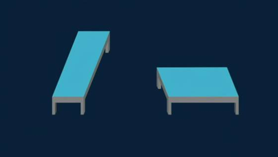
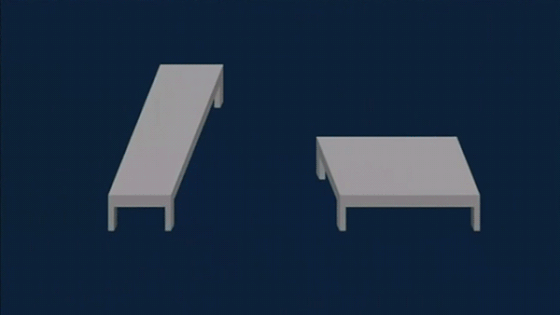
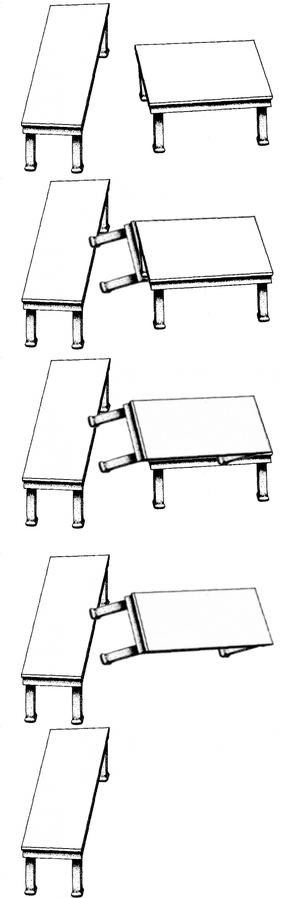

Imaging & Videochevron_right
Softwarechevron_right
Hardwarechevron_right
I am 25 years old, I was born in Bogotá. I have 74% progress in my career of systems and computing engineering at National University of Colombia. I am interested in machine learning and cibersecurity, i am interested in the fields of design, and in my spare time I make designs in software such as CorelDraw or Photoshop. One of my great challenges is to learn in depth how the Backend and the Frontend work in the world of web development.
I haven't had the opportunity to participate and contribute in a research open source project, but I would like enroll in a project in the future.
Shepard tables (also known as the Shepard tabletop illusion) are an optical illusion first published in 1990 as "Turning the Tables," by Stanford psychologist Roger N. Shepard in his book Mind Sights, a collection of illusions that he had created.It is one of the most powerful optical illusions, typically creating length miscalculations of 20–25%.

To quote A Dictionary of Psychology, the Shepard table illusion makes "a pair of identical parallelograms representing the tops of two tables appear radically different" because our eyes decode them according to rules for three-dimensional objects.
This illusion is based on a drawing of two parallelograms, identical aside from a rotation of 90 degrees. When the parallelograms are presented as tabletops, however, we see them as objects in three-dimensional space. One "table" seems long and narrow, with its longer dimension receding into the distance. The other "table" looks almost square, because we interpret its shorter dimension as foreshortening. The MIT Encyclopedia of the Cognitive Sciences explains the illusion as an effect of "size and shape constancy subjectively expand the near-far dimension along the line of sight."It classifies Shepard tables as an example of a geometrical illusion, in the category of an "illusion of size."

According to Shepard, "any knowledge or understanding of the illusion we may gain at the intellectual level remains virtually powerless to diminish the magnitude of the illusion."[5] Children diagnosed with autism spectrum disorder are less susceptible to the Shepard table illusion than typically developing children[2] but are equally susceptible to the Ebbinghaus illusion.
Shepard had described an earlier, less-powerful version of the illusion in 1981 as the "parallelogram illusion" (Perceptual Organization, pp. 297–9). The illusion can also be constructed using identical trapezoids rather than identical parallelograms.

A variant of the Shepard tabletop illusion was named "Best Illusion of the Year" for 2009.